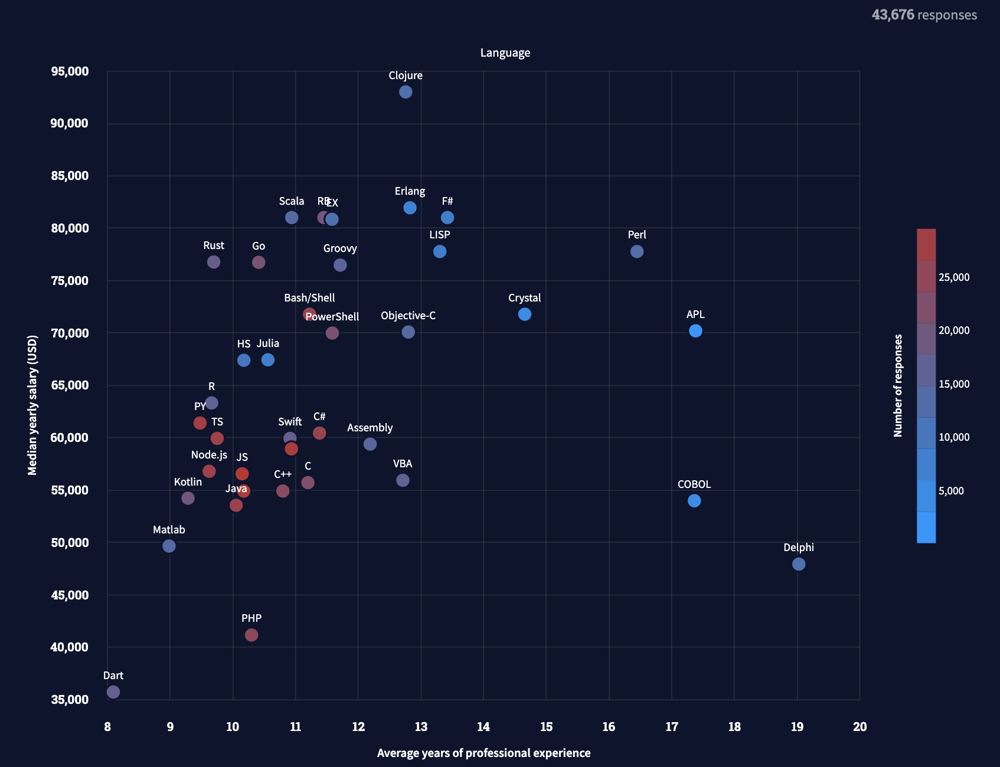
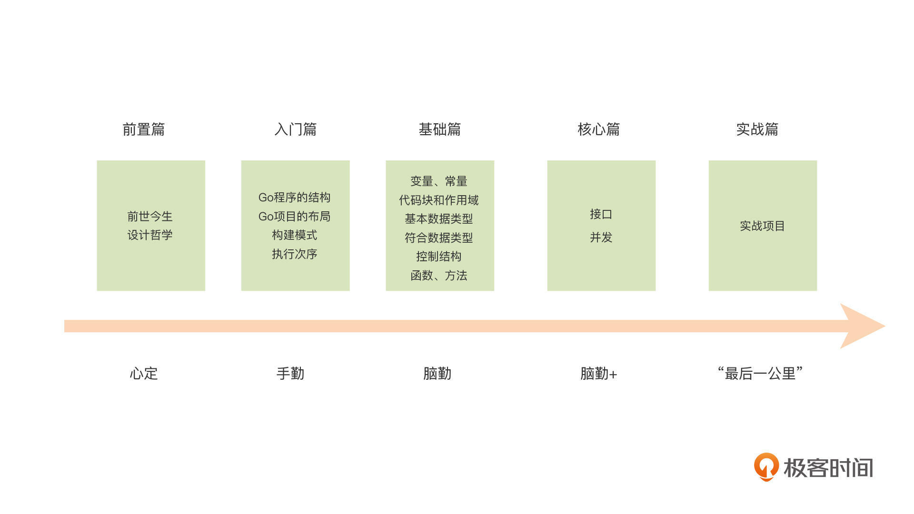

- 00 开篇词 这样入门Go，才能少走弯路.md.html
- 01 前世今生：你不得不了解的Go的历史和现状.md.html
- 02 拒绝“Hello and Bye”：Go语言的设计哲学是怎么一回事？.md.html
- 03 配好环境：选择一种最适合你的Go安装方法.md.html
- 04 初窥门径：一个Go程序的结构是怎样的？.md.html
- 05 标准先行：Go项目的布局标准是什么？.md.html
- 06 构建模式：Go是怎么解决包依赖管理问题的？.md.html
- 07 构建模式：Go Module的6类常规操作.md.html
- 08 入口函数与包初始化：搞清Go程序的执行次序.md.html
- 09 即学即练：构建一个Web服务就是这么简单.md.html
- 10 变量声明：静态语言有别于动态语言的重要特征.md.html
- 11 代码块与作用域：如何保证变量不会被遮蔽？.md.html
- 12 基本数据类型：Go原生支持的数值类型有哪些？.md.html
- 13 基本数据类型：为什么Go要原生支持字符串类型？.md.html
- 14 常量：Go在“常量”设计上的创新有哪些？.md.html
- 15 同构复合类型：从定长数组到变长切片.md.html
- 16 复合数据类型：原生map类型的实现机制是怎样的？.md.html
- 17 复合数据类型：用结构体建立对真实世界的抽象.md.html
- 18 控制结构：if的“快乐路径”原则.md.html
- 19 控制结构：Go的for循环，仅此一种.md.html
- 20 控制结构：Go中的switch语句有哪些变化？.md.html
- 21 函数：请叫我“一等公民”.md.html
- 22 函数：怎么结合多返回值进行错误处理？.md.html
- 23 函数：怎么让函数更简洁健壮？.md.html
- 24 方法：理解“方法”的本质.md.html
- 25 方法：方法集合与如何选择receiver类型？.md.html
- 26 方法：如何用类型嵌入模拟实现“继承”？.md.html
- 27 即学即练：跟踪函数调用链，理解代码更直观.md.html
- 28 接口：接口即契约.md.html
- 29 接口：为什么nil接口不等于nil？.md.html
- 30 接口：Go中最强大的魔法.md.html
- 31 并发：Go的并发方案实现方案是怎样的？.md.html
- 32 并发：聊聊Goroutine调度器的原理.md.html
- 33 并发：小channel中蕴含大智慧.md.html
- 34 并发：如何使用共享变量？.md.html
- 35 即学即练：如何实现一个轻量级线程池？.md.html
- 36 打稳根基：怎么实现一个TCP服务器？（上）.md.html
- 37 代码操练：怎么实现一个TCP服务器？（中）.md.html
- 38 成果优化：怎么实现一个TCP服务器？（下）.md.html
- 39 驯服泛型：了解类型参数.md.html
- 40 驯服泛型：定义泛型约束.md.html
- 41 驯服泛型：明确使用时机.md.html
- 元旦快乐 这是一份暂时停更的声明.md.html
- 加餐 作为Go Module的作者，你应该知道的几件事.md.html
- 加餐 如何拉取私有的Go Module？.md.html
- 加餐 我“私藏”的那些优质且权威的Go语言学习资料.md.html
- 加餐 聊聊Go 1.17版本的那些新特性.md.html
- 加餐 聊聊Go语言的指针.md.html
- 加餐 聊聊最近大热的Go泛型.md.html
- 大咖助阵 叶剑峰：Go语言中常用的那些代码优化点.md.html
- 大咖助阵 大明：Go泛型，泛了，但没有完全泛.md.html
- 大咖助阵 孔令飞：从小白到“老鸟”，我的Go语言进阶之路.md.html
- 大咖助阵 徐祥曦：从销售到分布式存储工程师，我与 Go 的故事.md.html
- 大咖助阵 曹春晖：聊聊 Go 语言的 GC 实现.md.html
- 大咖助阵 海纳：聊聊语言中的类型系统与泛型.md.html
- 期中测试 一起检验下你的学习成果吧.md.html
- 用户故事 罗杰：我的Go语言学习之路.md.html
- 结束语 和你一起迎接Go的黄金十年.md.html
- 结课测试 快来检验下你的学习成果吧！.md.html
- 捐赠
00 开篇词 这样入门Go，才能少走弯路
你好，我是白明（英文名：Tony Bai），欢迎你和我一起学习Go语言。
我现在在一家初创企业东软睿驰工作，是一名车联网平台的架构师，同时我也是技术博客tonybai.com的博主、GopherChina大会讲师。
从2011年开始我便关注了Go语言，是Go语言在国内的早期接纳者。那个时候，离Go开源还不过两年，没有人想到它会成长到今天这样，成为后端开发的主流语言之一。
在对Go长达十年的跟随和研究中，我沉淀了很多个人的经验和思考。我也希望通过这门课，跟你分享我学习和使用Go语言的一些心法。
我与Go的这十年
2011年，一次偶然的机会，我非常幸运地看到了Go语言之父Rob Pike的Go语言课程幻灯片。当时我正经受着C语言内存管理、线程调度和跨平台运行等问题的折磨，看到Go语言的语法清新简洁，还支持内存垃圾回收、原生支持并发，便一见钟情。
我是个对编程语言非常“挑剔”的人，这跟我从事的方向有关。十多年来，我一直在电信领域从事高并发、高性能、大容量的网关类平台服务端的开发，这两年也进入了智能网联汽车行业。由于长期从事后端服务开发，我涉猎过很多后端编程语言。
我曾深入研究过C++，短暂研究过Java、Ruby、Erlang、Haskell与Common Lisp，但都因为复杂度、耗资源、性能不够、不适用于大规模生产等种种原因放弃了。
而且，如果你对我所在的行业有所了解，你可能会知道，我参与开发的系统对性能十分敏感。我也曾长期使用C语言作为生产语言，同时使用Python开发各种辅助工具。但是，C语言的生产效率不高，各种陷阱也很多，而Python开发效率确实很高，但性能又不好。
难道就没有一门相对“完美”、符合我使用需求的编程语言吗？这个时候，Go来了。
但在我开始接触和学习Go的2011年，Go语言还未发布Go 1.0稳定版本，还处于“周发布（weekly release）”的状态。我还记得我接触的第一个Go版本还是release.r60，也就比Rob Pike的Go课程里使用的版本稍新一些。
但这个时候的Go版本，存在着很多不尽如人意的地方，尤其是GC延迟比较大，成为了Go语言上生产环境的最大障碍。
虽然Go早期版本无法上生产环境，但我却一直紧跟Go语言的演化进程。
从Go 1.4版本开始，每当Go发布一个大版本，我都撰文分析这个大版本中Go语言的主要变化。这一系列文章至今仍在继续，未来也将持续进行下去。
特别是在 Go 1.5版本实现自举、Go 1.11版本解决Go包依赖问题后，Go语言逐渐成熟，我也逐渐尝试在生产中使用Go。从开始替代Python编写一些辅助工具，到编写一些网关所需的网络协议，我发现Go都可以完美适用。
一直到近些年，Go替代了C、Python，成为了我的第一生产语言。我开始直接使用Go编写生产系统，诸如短信网关、5G消息网关、MQTT网关，还有API网关等等。事实证明，Go语言不仅生产效率高，其应用的执行效率也完全能满足要求。
从2019年开始，我将自己每天阅读到的Go社区的优秀技术资料整理成公开的Gopher日报供大家参阅。在国内Go社区中，Gopher日报得到了圈里许多同学的欢迎。
紧跟Go演进十年的我，已经将Go语言的点点滴滴深深地烙印在大脑中。
推荐你入坑Go的三大理由
如果说十年前的我是因为“一见钟情”瞬间入坑Go，那么在十年后的今天，我们应该做的是系统地、认真地思考一下为什么要选择学习Go。
我想了想，我会从这三个角度建议你现在开始学习Go语言。
第一个理由：对初学者足够友善，能够快速上手。
十多年来，业界都公认：Go是一种非常简单的语言。到底有多简单呢？在2011年，我从一个C语言程序员的身份开始学习Go，使用Rob Pike的Go教程，我在一天之内就学完了Go的全部语法，一周内就可以编写一些简单、实用，而且质量不低的小程序了。
而且，跟现在很多逐渐添加各种特性的语言相比，Go不仅一开始简单，直到现在也都保持“简单”。Go的设计者们在发布Go 1.0版本和兼容性规范后，似乎就把主要精力放在精心打磨Go的实现、改进语言周边工具链，还有提升Go开发者体验上了。演化了十多年，Go新增的语言特性也同样是“屈指可数”。
正因为如此，作为静态编程语言的Go已经将入门门槛，降低到和动态语言一个水平线上了。
第二个理由：生产力与性能的最佳结合。
Go的简单和对初学者的友善可以让更多的开发者走进Go语言大门，但要让更多开发者留在Go语言世界，Go还需体现出自己的核心竞争力。这个核心竞争力就是，Go语言是生产力与性能的最佳结合。
如果你熟悉的是静态语言，那你刚好就是Go最初的目标用户。Go创建的最初目的，就是构建流行的、高性能的服务器端编程语言，用以替代当时在这个领域使用较多的Java和C++。而且，Go也实现了它的这个目标。
Go语言的性能在带有GC和运行时的语言中名列前茅，与不带GC的静态编程语言（比如C/C++）之间也没有数量级的差距。在各大基准测试网站上，在相同的资源消耗水平的前提下，Go的性能虽然低于C++，但高出Java不少。
如果你熟悉的是动态语言，那也完全不用担心。Go的大部分早期采用者，就来自动态语言程序员群体，包括Python、JavaScript、Ruby和PHP等语言的使用群体。因为和动态语言相比，Go能够在保持生产力的同时，大幅度提高性能。比如，全球知名的非营利教育组织可汗学院从2019年末开始，就将其在线教育平台的实现从Python迁移到了Go。虽然Go代码行数要多于Python，但他们收获了近10倍的性能提升。
如果你立志或者已经上手云开发，那你就更应该马上开始学习Go语言。现在，Go已经成为了云基础架构语言，它在云原生基础设施、中间件与云服务领域大放异彩。同时，GO在DevOps/SRE、区块链、命令行交互程序（CLI）、Web服务，还有数据处理等方面也有大量拥趸，我们甚至可以看到Go在微控制器、机器人、游戏领域也有广泛应用。
第三个理由：快乐又有“钱景”。
Go最初的目标，就是重新为开发人员带来快乐。这个快乐来自哪里呢？相比C/C++，甚至是Java来说，Go在开发体验上的确有很大提升。笼统来说，这个提升来自于简单的语法、得心应手的工具链、丰富和健壮的标准库，还有生产力与性能的完美结合、免除内存管理的心智负担，对并发设计的原生支持等等。而这些良好的体验，恰恰是你写Go代码时的快乐源泉。
当然了，我相信你学习和使用Go肯定不是为了自嗨。运用Go体现自身价值，赢得理想职位才是最终目标。在十年后的今天，无论是在国内还是国外，无论是在大厂还是初创小公司，Go都有着广泛的应用。Go语言人才越来越抢手，对他们的争夺也日益激烈。
有报告表明，在腾讯、字节跳动、Uber等许多公司，Go都是极其受欢迎，在字节跳动、Uber内部甚至已经成长为主力语言。
更何况，相对于C、C++以及Java等主流语言，Go语言人才目前仍处于蓝海阶段。根据stackoverflow 2021调查报告的结果，仅考虑主流语言的话，Go语言平均薪水位于头部位置。

这还仅仅是以欧美开发人员调查数据为主的计算结果。在Go更加火爆的国内，Go的平均薪水水平位次可能还要更高。
怎样学才能少走弯路？
看到Go语言对初学者如此友好，又是生产力与性能结合得最好的语言，写起来还能体会到快乐。关键是当前国内外互联网大厂、初创小厂也都广泛接纳并应用Go，就业“钱景”极佳！很多人都纷纷投身于Go语言的学习中，但是盲目的“一头热”只会让你多走许多弯路。
我总结了一下，最常见的无非就是这几个：
- “入错行”，从开始到放弃。如果你在最开始缺乏对这门语言的认真评估，盲目投入进去，后期沉没的时间和精力成本都会巨大；
- 不动手。语言学习不是“纸上谈兵”，要动手去用，并且动手越早效果越好；
- 用其他编程语言思维编写Go代码。我认为，每门编程语言都有着自己独特的编程思维方式，如果你用其他编程语言的思维方式去写Go代码，那只能“形神皆丧”，无法掌握语言真谛；
- 没有建立起“设计意识”。编程语言学习的最终目的是写出具有现实实用意义的程序，所以你要培养自己选择适当的语言元素构造程序骨架的能力，也就是“设计意识”。尤其是要弄清楚不同语言元素所在的层次，不然你只能停留在“Hello, World”的世界里。
那么，我们到底要怎么学才能学好Go呢？
学好Go的前提是能坚持学下去。而要保证持续学下去，做好Go入门学习就至关重要。入门学习就好比一座在建大厦的地基，只有地基坚实、稳固，大厦才可能迎来建成，并耸立云霄的那天。
那么如何做好入门学习呢？这里告诉你三个诀窍与五个阶段。所谓三个诀窍是“心定、手勤、脑勤”。什么意思呢？我将这个入门课的学习分为下面五个阶段，我会结合这五个阶段来和你说明这三个诀窍。
第一个阶段：前置篇，“心定”建立认同感。
这一部分，我会带你了解Go的前世今生和设计哲学。如果你是有其他语言编程经验的开发人员，你就更应该完成前置篇的学习了。
这一部分存在的意义就是让你“心定”。所谓“心定”就是为了建立对Go语言的认同感。这种认同感是全方位的，包括对Go语言的设计目标、设计哲学、演化思路，还有社区行为规范等等。只有“心定”，才能避免出现“Hello-and-Bye”的情况，这是学好Go的前提。
第二个阶段：入门篇，“手勤”多动手实践。
在这一部分中，我将告诉你在不同平台上安装各种Go版本的方法，带你了解一个Go程序应该长什么模样，看看一些实用Go程序都有哪些语法元素和结构。关于Go的版本，如果我在课程中没有特地说明，那便默认使用的是Go最新的稳定版本，这里请你注意下。
编程不是“纸上谈兵”。我们最终都是要将编写完的源码提交给计算机编译运行的，因此，我希望你在这部分多动手、多实践。我在入门篇中将会让你拥有“照猫画虎”的能力。只有拥有这种能力，你才能“随心所欲”地动手实践。
第三个阶段：基础篇，“脑勤”多理解，夯实基础。
这一部分，我们会围绕着“程序=数据+算法”的逻辑，从变量、常量等基本概念，到数据类型，再到广义的算法，让你可以用Go建立对现实世界的抽象认知，也能明白Go程序运行的基本逻辑。
在基础篇的结尾，我们会结合已学习的基础语法做一个小练习项目。实践与理论的结合才能达到更好的学习效果。
第四个阶段：核心篇，“脑勤+”建立自己的Go应用设计意识。
在这部分，我会跟你介绍Go语言独有或经过较大创新的接口类型与goroutine等并发原语类型，这些语法元素是Go语言的核心。
Go接口与Goroutine等并发原语类型有一个共同的特点，那就是它们都是可以影响到Go应用程序的结构设计的语法元素。Goroutine等并发原语是Go应用运行时并发设计的基础，而接口则是Go推崇的面向组合设计的抓手，这一动一静共同构成了Go应用程序的骨架。通过这一部分，你就能建立自己的Go应用“设计意识”。
第五个阶段：实战篇，攻克Go开发的“最后一公里”。
编程就是要做到学以致用。在掌握了Go语言的基础语法、核心语法并建立起自己的“设计意识”后，我们就是时候应用这些Go语言的特性来解决实际问题了。
在这部分中，我们将通过一个实战的例子，展示如何做好学习与使用之间的衔接，帮助你走完“使用Go进行生产级开发”这“最后一公里”。

更具体的目录，我也放在了这里，你可以看一下：
在开篇词的最后，我想说，Go是一门非常优秀的后端编程语言，它简单而不失表达力，兼具高生产力与战斗力（高性能）。它既能给你带去编码的快乐，也能因市场的广泛接受与热捧而提升你的个人价值。
所以，我衷心地希望你能完成这门课程的学习。希望我的这门课能帮助你将Go语言之路走得更顺畅，早日成长为一名优秀的Go语言开发工程师。
不要再犹豫了，来和我一起开启Go语言的学习之旅吧。
© 2019 - 2023 Liangliang Lee. Powered by gin and hexo-theme-book.